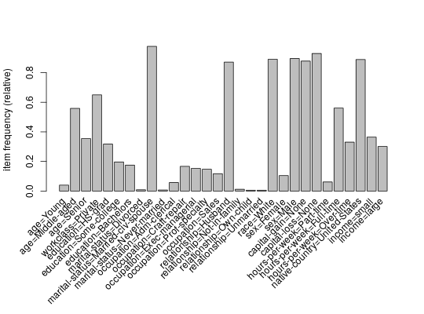

Provides the S4 method predict for itemMatrix (e.g.,
transactions). Predicts the membership (nearest neighbor) of new data to
clusters represented by medoids or labeled examples.
# S4 method for itemMatrix predict(object, newdata, labels = NULL, blocksize = 200,…)
object. x and/or y (approx. in MB). This is only a crude
approximation for 32-bit machines (64-bit architectures need double the
blocksize in memory) and using the default Jaccard method for dissimilarity
calculation. In general, reducing blocksize will decrease the
memory usage but will increase the run-time.dissimilarity. E.g.,
method.An integer vector of the same length as newdata
containing the predicted labels for each element.
dissimilarity,
itemMatrix-class
data("Adult") ## sample small <- sample(Adult, 500) large <- sample(Adult, 5000) ## cluster a small sample d_jaccard <- dissimilarity(small) hc <- hclust(d_jaccard) l <- cutree(hc, k=4) ## predict labels for a larger sample labels <- predict(small, large, l) ## plot the profile of the 1. cluster itemFrequencyPlot(large[labels==1, itemFrequency(large) > 0.1])